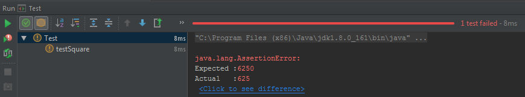

JUnit (IntelliJ IDEA)
1. Создайте новый проект Maven
2. Подключите в pom.xml библиотеку JUnit
<dependencies>
<dependency>
<groupId>junit</groupId>
<artifactId>junit</artifactId>
<version>4.12</version>
<scope>test</scope>
</dependency>
</dependencies>
3. В папке src\main\Java\ создайте класс SquareNumber.java и опишите простой класс
public class SquareNumber {
public int squareSum(int n){
return n * n;
}
}
4. В папке src\main\Java\ создайте класс Programm.java и опишите вызов класса SquareNumber
public class Program {
public static void main(String[] args){
SquareNumber s = new SquareNumber();
int result = s.squareSum(25);
System.out.println(result);
}
}
Собирите билд через меню Build -> Build project
Запустите проект через меню Run -> Run
В консоли будет показан результат 625

5. В папке src\test\Java\ создайте класс Test.java в котором опишите тест класса SquareNumber
import static org.junit.Assert.*;
public class Test {
@org.junit.Test
public void testSquare(){
SquareNumber s = new SquareNumber();
int actual = s.squareSum(25);
int expected = 625;
assertEquals(expected, actual);
}
}
Выделите этот файл и откройте контекстное меню, далее нажмите пункт Run 'Test'
Если всё будет корректно вы получите результат

Для проверки изменим ожидаемый результат, и в ходе проверки получим сообщение об ошибке

Created with the Personal Edition of HelpNDoc: Easily create iPhone documentation